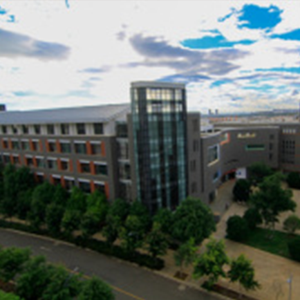
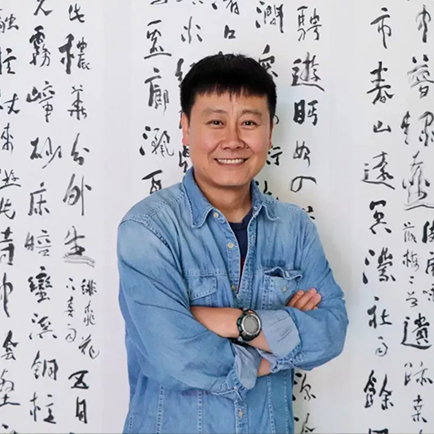

{kind=link}
和志虹
1975 年 3月 一 2010 年 1月 13日，女，纳西族，云南丽江人，大学本科文化，烈士
云南师范大学前身是诞生于 1938 年的国立西南联合大学师范学院。1946 年，组成西南联大的北京大学、清华大学、南开大学三校复员北返，其师范学院留昆明独立建校，定名国立昆明师范学院，1950 年改名昆明师范学院，1984 年更名为云南师范大学，1999 年，与云南教育学院、云南体育进修学院合并重组云南师范大学。2000 年 8 月，云南银行学校并入云南师范大学。
校歌园由校歌墙、歌词反映的西南联大历史浮雕、小型合唱台及校歌音频系统等部分组成。校歌墙主要展现校歌词曲内容、校歌由来、作者简介。中间的词曲内容，用紫铜镶嵌。两侧分别为校歌创作由来以及作者简介，作者的浮雕头像用青铜铸造，文字阴刻并填色。歌词反映的西南联大历史浮雕由避寇南渡，火种不灭；暂驻衡湘，组成临大；万里长征，再迁昆明；改名联大、边徼育人；支持抗战、民主堡垒；神州光复，三校北返；师院留滇，事业长存七部分组成，7 个历史节点在一整块浮雕墙上展现，形状为弧形，具有歌曲简谱的形状，且恢弘壮烈，具有历史画卷感。浮雕墙材质为坚固、耐风吹雨淋日晒的青石，整体长度为 19.38 米，对应校歌创作时间为 1938 年。
纪念亭按正三角形的建筑位置进行分布，表示北大、清华、南开三校组成的联大。三个纪念亭分别为北大亭、清华亭、南开亭，大小一致，样式相同，距离相等。三亭之间，一块绿茸茸的草坪作为点缀，鸟语花香，这里也是许多师生休憩学习的好地方。
云南师范大学图书馆成立于云南师范大学建校之初。1998 年 7 月，云南师范大学、云南教育学院两校合并，成立新云南师范大学，在三个校区设立图书馆，云南师范大学图书馆由校本部、学府路校区和龙泉路校区的 3 个分馆组成。 2012 年校区整合后，云南师范大学图书馆由呈贡主校区图书馆和一二一联大校区图书馆 2 个分馆组成。三校区图书馆面积为 7 万多平方米。截至 2013 年 7 月，全校拥有纸质文献资源约 310 万册（件），中外文数据库 42 个，139.52 万册电子图书。在学校党委和行政的领导下，图书馆围绕学校建设区域性高水平大学的奋斗目标，提出了在 “十二五” 期间，建设以 “人文、数字、生态和开放” 为特色，以服务研究型图书馆为特质，以 “国内知名、西部一流、省内先进” 为努力方向，以服务学校教学、科研和云南文化强省建设为目的的现代化大学图书馆。

云南师范大学美术学院现有美术学（师范与非师范）书法学、视觉传达设计、环境设计、产品设计、服装设计 7
个本科专业，有三个一级学科招收硕士研究生，即艺术学理论、美术学、设计学。在校本科与硕士研究生 1000 余人 。
美术学院的办学理念是强调全面发展和一专多能，重视培养学生的创新意识、创造能力、实践观念和创业精神；在教学观念和课程设置上体现现代艺术教育思想，反映最新的艺术创作与艺术理论研究成果，注重学生美学修养、艺术理论和人文知识的学习与提高，以宽厚的文化知识为基础，以创新的实践能力为核心，以个性的全面发展为特色，培养适应社会发展需求的新型艺术人才
美术学院美术学院专任教师 45 人，其中副高级以上职称教师 14 人，外聘专家 10 余人，专任教师中具有博士、硕士学位学历教师占总数 50%，硕士生导师 18 人。“美术学” 为校级重点学科，是教育部组织实施的教师教育专业课程改革试点单位。近年来，美术学院教师在出版著作、作品，在编写教材、发表论文，主持或参与省级以上社科研究项目、教学建设项目等方面成果突出，大量成果获省级、国家级以上奖项。在 “艺术设计大赛”、“教学技能比赛” 以及各类美术展览等活动中，艺术学院的师生都有不俗的表现。
云南建筑蔚然大观
类型众多
多民族的融合
多元的地域风情
独特的地理位置
造就与众不同的建筑风格
云南师范大学
红土高原上的教师摇篮
历经 80 余年的沧桑砥砺
传承着西南联大精神
让我们一起走进云南师范大学！
Thanks for your watch
{kind=link}
{kind=link}
{kind=link}
{kind=link}